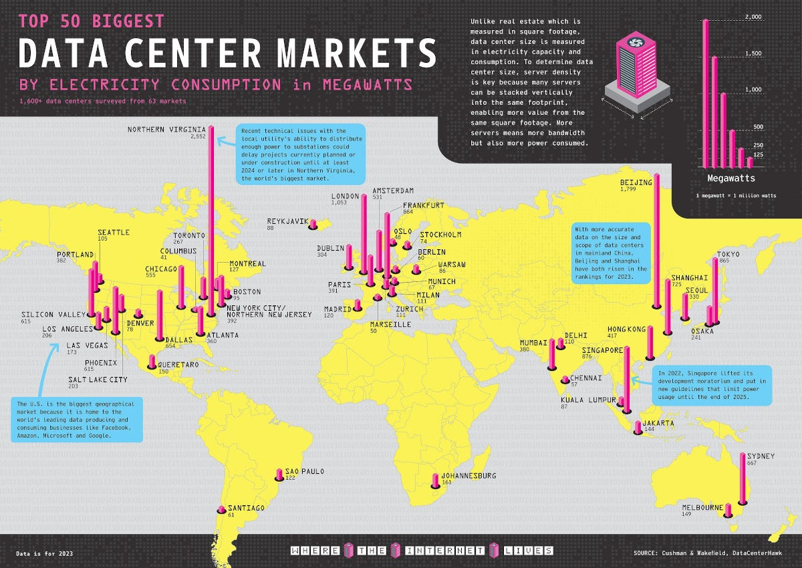
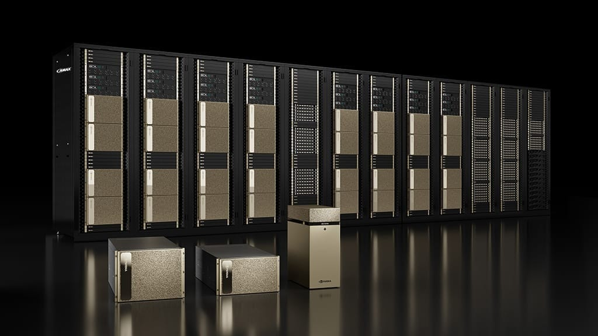
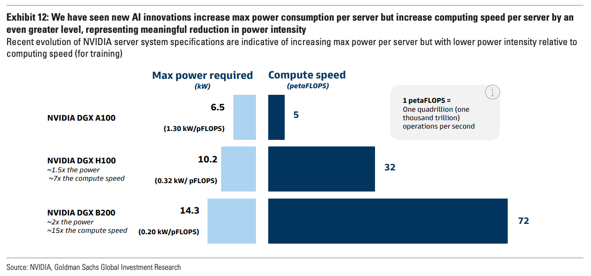

正如一位金融家当时所观察到的，美国新兴电力系统所需的资金数额"令人眼花缭乱"，"听起来更像是天文数字，而不是实实在在辛苦赚来的美元总额"。
——《电力损耗》，Richard Hirsh 1999，转引自 Construction Physics（描述约 1900 年的电网建设）
我们正处于历史上最大规模的计算基础设施建设项目之一。
100 多年前，我们见证了类似的电网建设（讽刺的是，电网正是当今建设浪潮的瓶颈之一）。在电网诞生的过程中，我们经历了发电厂的规模化建设（尽可能把发电厂建得更大以获取性能提升）、"天文数字"般的资本支出，以及电力成本的急剧下降。
今天，我们正见证数据中心的规模化建设、超大规模云服务商的"天文数字"资本支出，以及 AI 算力成本的急剧下降：

本文是一个系列文章的开篇，旨在深入剖析 AI 数据中心：它究竟意味着什么、谁为其提供组件、以及机会可能在哪里。
本文将专门聚焦于建设 AI 专用数据中心所需的基础设施；如果你需要一份关于数据中心的入门介绍，我推荐阅读我几个月前发布的这篇文章。
一、AI 数据中心概述
"数据中心"这个词远远不足以形容这些"AI 工厂"（黄仁勋亲切地这么称呼它们）的庞大规模。最大的数据中心（例如 xAI 的 Colossus 集群）在土地、电气与冷却设备、建设成本、GPU 及其他计算基础设施上的投入高达数十亿美元。
这还没算上能源成本。新建的最大型超大规模数据中心将消耗高达 1GW 的电力容量。作为参考，纽约市的总用电量约为 5.5GW。也就是说，每建成五个这样的超大数据中心，就相当于给电网增加了一个纽约市的用电量。
我们可以把数据中心价值链大致分为几类：数据中心的前期建设开发、支撑数据中心的工业设备、数据中心内部的算力基础设施，以及数据中心运行所需的能源。此外，还有一批公司拥有或租赁数据中心，向终端用户提供服务。
我们可以用下图来呈现这条价值链：

这张图并未涵盖所有与数据中心相关的公司。还有金融家、房地产开发商、建筑公司，以及许多其他角色在为这轮建设贡献力量。正如 Morgan Housel 所说："如果有人指出我遗漏了什么，我很可能会同意。"
在深入探讨之前，我们应该先回顾一下数据中心的历史（这与我们今天看到的能源紧缺问题尤其相关，特别是在北弗吉尼亚地区）。
二、数据中心简史
数据中心的发展在很大程度上是伴随计算机和互联网的兴起而演进的。我将简要讨论这些趋势的历史，以及我们是如何走到今天的。
数据中心早期历史
最早的计算形态与今天的数据中心颇为相似：一台集中式计算机，用于解决计算密集型的关键任务。
我们有两个早期的例子：
巨像计算机（Colossus）——由艾伦·图灵为破解恩尼格玛密码机而建造的计算机。（注：图灵也被誉为人工智能和计算机科学之父。他提出了图灵测试，作为检验 AI 是否真实存在的方法，ChatGPT 去年通过了这一测试）。
ENIAC——第二次世界大战期间由美国军方设计，但直到 1946 年才完成的计算机。巨像的建造时间早于 ENIAC，但由于巨像的保密性质，ENIAC 常被视为第一台计算机。
两者都被安置在可称为"首批数据中心"的场所中。

延伸阅读：《世界第一台计算机 ENIAC 的历程》——Sims Lifecycle Services
20 世纪 50 年代，IBM 凭借大型主机计算机崛起并主导了计算领域。这奠定了其在技术领域长达数十年的主导地位，AT&T 则是当时另一家占据主导地位的科技公司。
ARPANET 于 1969 年发布（DARPA 时间线），最初是为了连接美国日益增长的计算机数量而开发的。它现在被视为互联网的最早雏形。由于这是一个政府项目，其连接最密集的区域集中在华盛顿特区周边。
这正是北弗吉尼亚在计算领域占据主导地位的根源。随着每一代新数据中心的建设，人们都希望利用已有的基础设施。而这些基础设施恰好就在北弗吉尼亚地区，直至今日依然如此！

延伸阅读：《全球前 50 大数据中心市场》——Visual Capitalist
互联网与云的崛起
20 世纪 90 年代，随着互联网的发展，我们需要更多的物理基础设施来处理日益增长的互联网数据。其中一部分体现为作为互联节点的数据中心。像 AT&T 这样的电信运营商已经建设了通信基础设施，因此这是它们自然而然的扩张方向。
然而，这些电信公司与今天的垂直整合云服务商面临着类似的"竞合"关系。AT&T 既拥有通过其基础设施传输的数据，也拥有基础设施本身。因此在容量有限的情况下，AT&T 会优先处理自己的数据。企业对这种关系心存顾虑，这促成了 Digital Realty 和 Equinix 等数据中心公司的崛起。
在互联网泡沫期间，数据中心经历了大规模投资，但泡沫破裂后投资大幅放缓（在推断数据时，我们应该牢记这一教训）。

数据中心的低迷期在 2006 年随着亚马逊云服务（AWS）的发布开始逆转。此后，美国的数据中心容量基本保持持续增长。

延伸阅读：《追赶数据中心建设的制约因素》——Data Center Knowledge
AI 数据中心的到来
这种稳定增长一直持续到 2023 年，AI 狂潮席卷而来。目前的估算显示，到 2030 年数据中心容量将翻一番（请注意，这些只是估算值）。

AI 训练独特的工作负载，使人们重新关注数据中心的规模。算力基础设施彼此靠得越近，性能就越高。此外，当数据中心被设计为一个个"算力单元"而不仅仅是装满服务器的房间时，企业还能获得额外的集成优势。
最后，由于训练并不需要靠近终端用户，数据中心可以建在任何地方。
总结今天的 AI 数据中心：它们专注于规模、性能与成本，并且可以建在任何地方。
三、建设 AI 数据中心需要什么？
1. 建设 AI 数据中心
算力提供商（超大规模云服务商、AI 公司、GPU 云）要么自行建设数据中心，要么与 Vantage、QTS 或 Equinix 等数据中心开发商合作，寻找一块具备电力容量的土地。
随后，他们会聘请总承包商来管理施工过程；总承包商再为每个专业（电气、管道、暖通空调）聘请分包商并采购原材料。工人会在项目建设期间迁入该地区。建筑的"外壳"搭建完成后，下一步就是安装设备。

延伸阅读：《如何建设与维护完善的数据中心安全体系》——RSI Security
数据中心的工业设备大致可分为电气设备和冷却设备。电气设备从连接外部能源的主开关柜开始，然后连接到配电单元、不间断电源（UPS），以及连接服务器机架的线缆。大多数数据中心还会配备柴油发电机，作为停电时的备用电源。
第二类是机械设备与冷却设备，包括冷水机组、冷却塔、暖通空调设备，以及连接到服务器本身的液冷或风冷系统。
2. AI 数据中心中的计算
算力基础设施包括运行 AI 训练和推理工作负载的设备。最主要的设备是 GPU 或加速器。除英伟达、AMD 和超大规模云服务商之外，还有大量初创公司正在争夺 AI 加速器市场的一份份额：

虽然不如过去那么重要，但 CPU 在完成复杂操作和"委派"任务方面仍然扮演着重要角色。存储将数据保存在芯片之外，而内存则存放需要频繁访问的数据。网络则把所有组件连接起来，既包括服务器内部，也包括服务器外部。
最后，所有这些都被封装进一台服务器，以便安装在数据中心内。我们可以在下图中看到其中一台服务器的内部可视化（注意：存储将是外部的）。

3. AI 数据中心的电力供应
能源供应链大致可分为以下几个环节：
能源来源——化石燃料、可再生能源和核能，都可以用来发电。
发电——发电厂将化石燃料转化为电能；对可再生能源而言，发电环节更接近能源来源本身。
输电——电力随后通过高压线路输送到靠近目的地的地方。变压器和变电站将高压电降至适合消费的水平。
公用事业／配电——公用事业公司负责最后一公里的配电，并通过购电协议（PPA）管理电力的输送。

输电与配电通常被合称为"电网"，由地方机构管理。根据地理位置的不同，其中任何一个环节都可能成为能源输送的瓶颈。
事实证明，能源正是 AI 数据中心建设的一个关键瓶颈。
不幸的是，并没有快速增加电力容量的简单办法。数据中心有两种选择：并网供电和离网供电。并网供电通过电网输送，由公用事业公司分配；离网供电则绕过电网，例如现场太阳能、风能和电池。或者更理想：把 GW 级数据中心直接建在 2.5GW 核电站旁边！
并网供电的问题在于扩大电网容量所需的时间；下图显示了从提出申请到投入商业运营的输电等待时间。（这指的是从能源来源申请输电容量，到实际投入使用的时间）。

解决这些挑战必然需要多种方案的组合。更多内容将在最后一节讨论。
四、AI 数据中心有哪些新变化？
新一代数据中心更大、更密集、更快，能源需求也更高。
数据中心的"超大化"并非新鲜事。每隔几年就会有关于数据中心规模膨胀的文章：从 2001 年的几兆瓦，到 2010 年代的 50 兆瓦，再到 2020 年"庞大的 120 兆瓦"数据中心，直至今天的吉瓦级数据中心。
这些吉瓦级数据中心也更为密集，是采用系统视角设计出来的。这里要解决的核心问题是摩尔定律的放缓——即随着晶体管密度提升，半导体性能将持续改进这一规律。然而，晶体管的改进正变得越来越困难。因此，解决方案是把服务器、甚至整个数据中心更紧密地集成在一起。
在实践中，这意味着数据中心正被设计为集成系统，而不再是装满独立服务器的房间。这些服务器本身也被设计为集成系统，把各个组件更紧密地结合在一起。
这就是英伟达销售服务器和 POD 的原因，也是超大规模云服务商正在构建系统级数据中心的原因，很可能也是 AMD 收购 ZT Systems 的原因。
下图展示了英伟达 DGX H100 的外观，它既可以作为独立服务器运行，也可以在 POD 中与其他 GPU 互联，或进一步组成 SuperPOD 以获得更多连接：

英伟达还率先推动了"加速计算"，即把任务从 CPU 上卸载出去，这提升了其他所有组件（包括 GPU、网络和软件）的重要性。
除此之外，AI 的独特需求还要求处理海量数据。这使得存储日益庞大的数据量（内存／存储）以及快速搬运日益庞大的数据量（网络）变得更加重要。这类似于心脏泵血——GPU 如同心脏，数据如同血液（这也是谷歌 TPU 的架构被称为"脉动阵列"的原因）。
所有这些趋势汇聚在一起，造就了地球上最强大的计算机。这种算力带来了更高的能耗、更多的发热，以及每台服务器所需的更多冷却。而能耗只会继续上升（连同我们对算力的胃口）：

延伸阅读：《代际增长：AI 数据中心与美国即将到来的电力激增》——Goldman Sachs
五、瓶颈与受益者
这不是一份详尽的受益者名单，而是我目前最感兴趣的一份名单。整条供应链都处于紧绷状态，我听到过各种关于瓶颈的见闻，从缺乏建造变压器的熟练工人，到许可审批的自动化。
1. 扩展（或增强）电网，或绕开电网
很明显，我们的能源基础设施需要发展，才能支撑这轮建设。几乎每家科技公司都更倾向于使用并网电力：它更可靠，管理起来也更省力。遗憾的是，当并网电力无法获得时，超大规模云服务商会自行采取行动。例如，AWS 正投资 110 亿美元在印第安纳州建设一个数据中心园区，并配套建设四个太阳能电站和一个风电场为其供电（600 兆瓦）。
从中长期来看，我对解决能源瓶颈的两个方向最为乐观：核能和电池。两者都能为数据中心提供更可持续的能源。
核能的优点已被充分论证：清洁、可靠。挑战在于如何以经济可行的方式建设核电设施。在我看来，一些世界上最令人兴奋的初创公司正在攻克这一难题。
长时储能电池的创新将是可再生能源向前迈出的重要一步。太阳能和风能的问题在于其波动性——只有在刮风或有阳光时才能发电。长时电池通过"能源富余时储存、能源短缺时释放"来缓解这一问题。
2. 施工许可与液冷
在工业层面，我关注的两个趋势是许可审批自动化和液冷。当我与为本文做研究的人交流时，有一个话题反复被提及为这轮建设的瓶颈：许可审批。
对于数据中心和能源扩建，开发商需要取得建筑、环保、分区、噪音等方面的许可，可能还需要获得地方、州和国家级机构的批准。除此之外，还要应对因地区而异的优先购买权法律。对于能源基础设施而言，这更加令人头疼。像 PermitFlow 这样的许可审批软件公司，正处于帮助缓解这些痛点的有利位置。
新型 AI 数据中心一个明显的不同之处，是服务器产生的热量不断增加。新一代数据中心将采用液冷，而下一代数据中心可能会采用浸没式冷却。
3. 向计算公司致敬
很难不承认两点：（1）英伟达在构建自身生态方面所做的工作令人惊叹；（2）AMD 在确立自己作为真正替代选项方面所做的努力。英伟达在 AI 领域的定位之精准令人叹服——从应用，到软件基础设施，再到云、系统和芯片。如果为一次技术浪潮写一份完美的备战剧本，英伟达已经把它完美演绎了一遍。
Crusoe 是另一家在这轮建设中站位极佳的公司，同时提供 AI 算力与能源服务。
最后，随着收入沿价值链流动，涉足数据中心建设的计算公司应当继续有良好表现。从网络，到存储，再到服务器——只要一家公司能提供顶级性能，它就能做得好。
4. 结语
关于数据中心建设，我的最后一点想法是：虽然它看起来像是一个新趋势，但它其实是计算发展更宏大历史的一部分。我认为 AI、数据中心和计算不应该是彼此割裂的话题。
正如 Sam Altman 所描述的：
"看待人类历史有一种狭隘的方式：经过数千年科学发现与技术进步的复利积累，我们学会了如何熔化沙子、加入一些杂质，以惊人的精度在极小的尺度上把它排列成计算机芯片，让电能从中流过，最终得到能够创造出越来越强大的人工智能的系统。"
艾伦·图灵是现代计算机、计算机科学和 AI 之父，这绝非巧合。在过去 100 年里，"创造智能"始终是一条持续不变的线索。而数据中心，正是今天这条线索的核心。
一如既往，感谢阅读！
免责声明：本文所含信息不构成投资建议，也不应作为投资建议使用。在投资本文讨论的任何证券之前，投资者应自行开展尽职调查。尽管我力求准确，但我无法保证本文信息的准确性或可靠性。本文基于我的个人观点，应作为观点而非事实参考。本网站及其他链接内容中、或发布到社交媒体及其他平台上的观点均为我个人观点，不代表 Felicis Ventures Management Company, LLC 的观点。